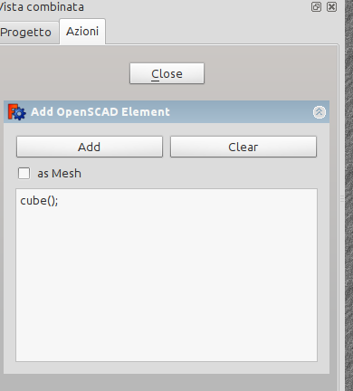
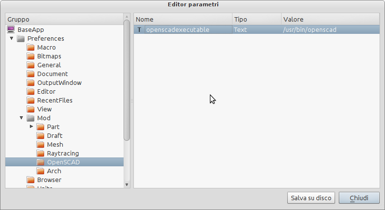
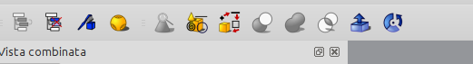

|
| Posizione nel menu |
|---|
| OpenSCAD → Aggiungi Elemento OpenSCAD |
| Ambiente |
| OpenSCAD |
| Avvio veloce |
| Nessuno |
| Vedere anche |
| Nessuno |
Descrizione
Aggiunge un elemento OpenSCAD inserendo il codice OpenSCAD nel pannello delle azioni ed esegue il binario di OpenSCAD (richiede OpenSCAD installato)
Quando è selezionato as Mesh, OpenSCAD restituisce un oggetto Mesh.
Ogni volta che si preme Aggiungi viene eseguito il codice OpenSCAD e gli elementi vengono importati.
Questa funzione non fornisce alcun controllo della sintassi o messaggi di errore tranne un output se OpenSCAD è mancante. Se mancano degli elementi, il percorso usato per specificare le dichiarazioni <>and include<> potrebbe essere sbagliato.
Le librerie dovrebbero essere accessibili di default, e agli esempi si può accedere con:
include <../examples/example001.scad>;
che dovrebbe includere il primo esempio (example001.scad), noto anche come l'icona di OpenSCAD
Impostazione iniziale di OpenSCAD all'interno di FreeCAD
- Affinché FreeCAD possieda questa funzionalità è necessario che OpenSCAD sia installato sul computer.
- Installare la versione di OpenSCAD adatta al proprio sistema operativo. Vedere il sito di OpenSCAD per maggiori informazioni.
- FreeCAD ha bisogno di sapere dove trovare l'eseguibile OpenSCAD.
- Avviare FreeCAD e andare al menu Strumenti, selezionare Modifica parametri....
- Nella finestra di sinistra esplorare Preferences....Mod...OpenSCAD. Cliccare su OpenSCAD,
- quindi "cliccare con il tasto destro del mouse" nella finestra di destra e selezionare Nuovo elemento String.
- Appare una finestra pop-up in cui viene chiesto il nome del nuovo elemento, immettere il nome openscadexecutable e confermare.
- Ora la finestra pop-up passa a chiedere il testo, immettere il percorso del file eseguibile di OpenSCAD (ad esempio in Ubuntu il percorso è: /usr/bin/openscad).
- Chiudere e riavviare FreeCAD. Nella barra degli strumenti e nel menu OpenSCAD, nell'ambiente OpenSCAD di FreeCAD, appare una nuova icona OpenSCAD.
- È anche possibile aggiungere un altro parametro opzionale che controlla il numero massimo di lati di un poligono prima che esso sia considerato un cerchio.
- La procedura per aggiungere questo parametro è simile alla precedente, ma si deve aggiungere un "Nuovo elemento Integer", di nome UseMaxFN, e quindi immettere un valore appropriato.
Il pannello Azioni per l'inserimento di un elemento OpenSCAD:

{kind=link}
Inserimento dell'eseguibile di OpenSCAD in FreeCAD:

{kind=link}
L'icona di Aggiungi elemento OpenSCAD:

{kind=link}
A partire dalla versione 0.14, se l'impostazione di cui sopra è vuota, FreeCAD cerca l'eseguibile OpenSCAD.